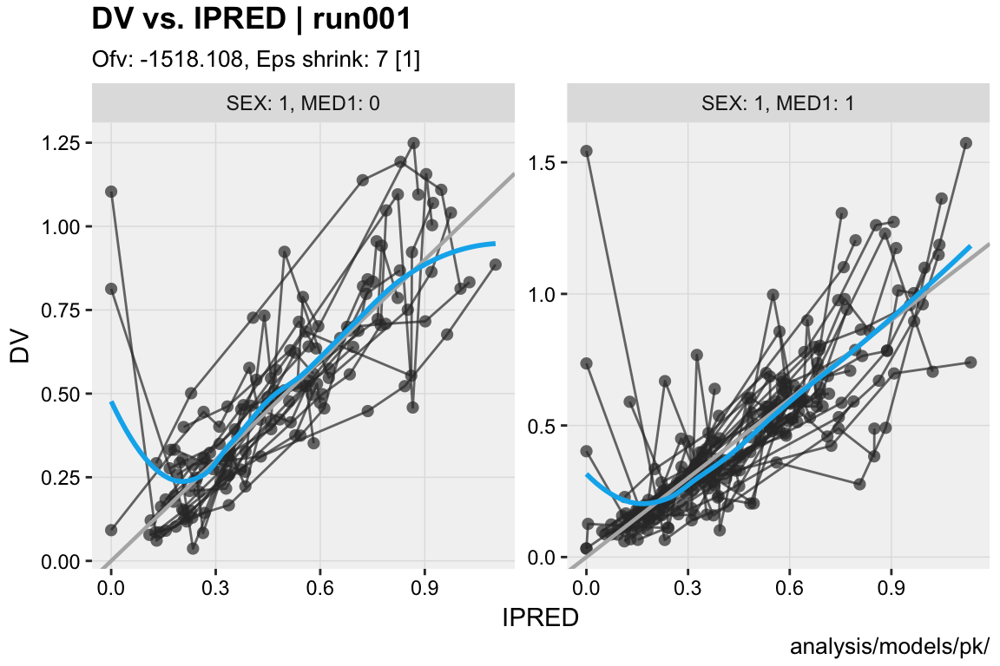
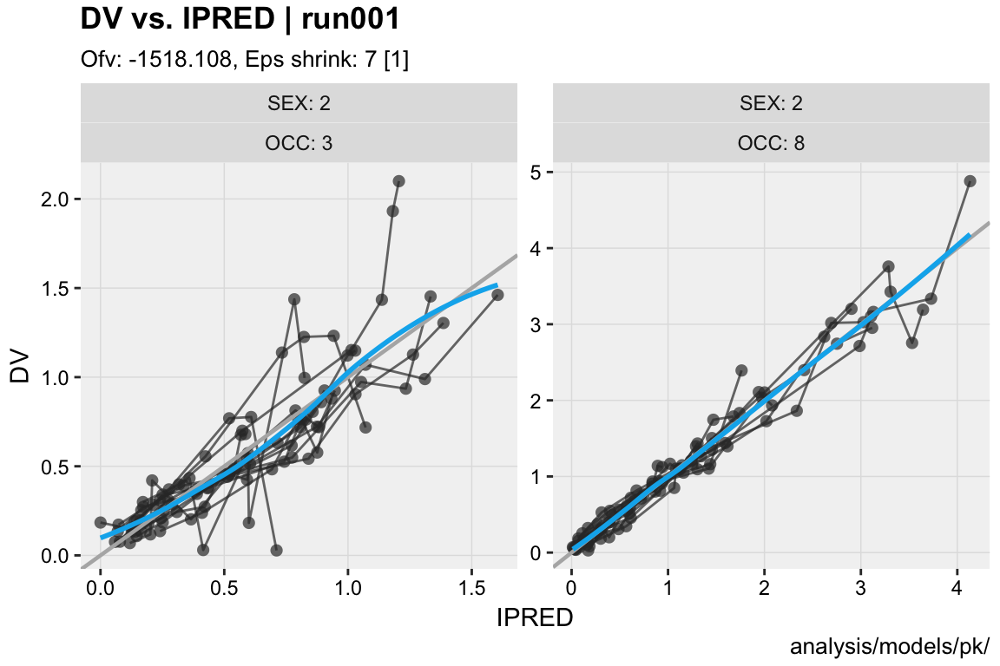
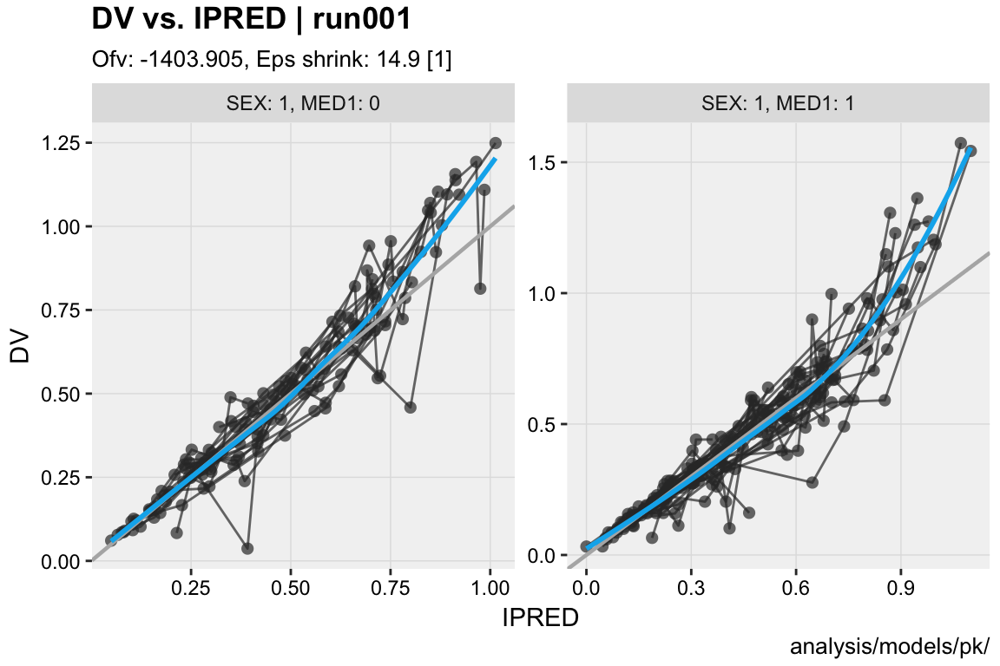
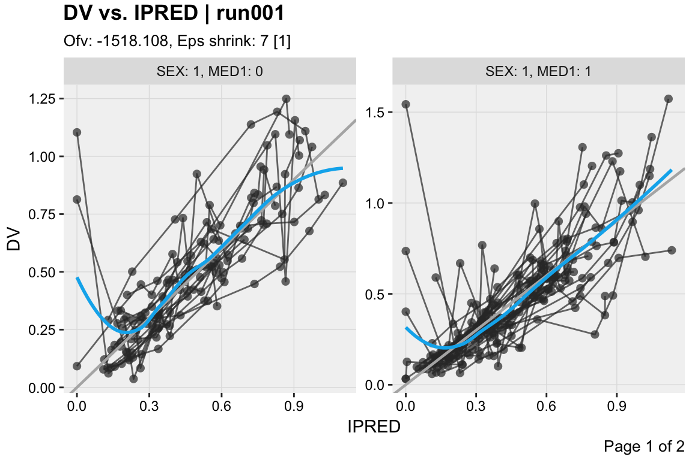
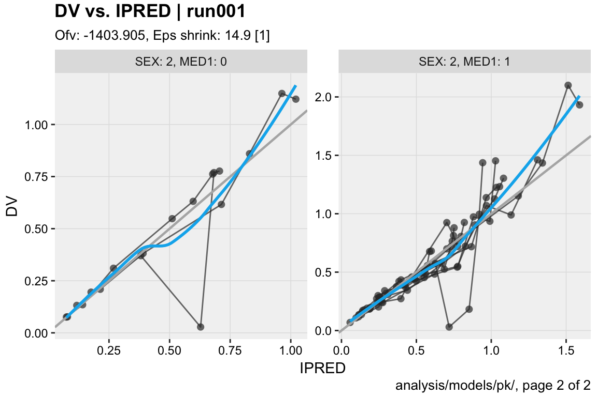

Plots with multiple pages
Benjamin Guiastrennec
16 August, 2018
Source:vignettes/multiple_pages.Rmd
multiple_pages.RmdBases of plot faceting
Panels (or faceting) can be created by using the facets argument as follows:
- If
facetsis a string e.gfacets = "SEX", facets will be created usingggforce::facet_wrap_paginate - If
facetsis a formula e.gfacets = SEX~MED1, facets will be created usingggforce::facet_grid_paginate
# Example with a string
dv_vs_ipred(xpdb, facets = c('SEX', 'MED1'))
# Example with a formula
dv_vs_ipred(xpdb, facets = SEX~MED1, margins = TRUE)
All xpose plot functions accept arguments for facet_wrap_pagninate and facet_grid_paginate (e.g. ncol = 2, labeller = 'label_both', etc.). With the default xpose theme scales are set to 'free' from one panel to another (scales = 'free'), this behavior can be changed with scales = 'fixed', 'free_y' or 'free_x'.
Faceting over multiple pages
Setting the layout
When the arguments ncol and nrow are set and under the condition that they are more panels to be drawn that can fit on a single page given the selected layout, the multiple page functionality will automatically be enabled.
dv_vs_ipred(xpdb, facets = c('SEX', 'MED1'), ncol = 2, nrow = 1)
Selecting pages
By default all pages will be shown but this can be time consuming. To select only specific pages to be drawn, use the argument page.
dv_vs_ipred(xpdb, facets = c('SEX', 'MED1'), ncol = 2, nrow = 1, page = 1)
It is also possible to change the page(s) to be drawn from an already existing xpose_plot object via the print() function.
# Create an xpose_plot, by default page = 1
p1 <- dv_vs_ipred(xpdb, facets = c('SEX', 'MED1'), ncol = 2, nrow = 1)
# Change the page to be drawn
print(p1, page = 2)Numbering pages
To number pages the keywords @page and @lastpage can be used to respectively indicate the current page and the total number of pages.
dv_vs_ipred(xpdb, facets = c('SEX', 'MED1'), ncol = 2, nrow = 1, page = 1, caption = 'Page @page of @lastpage')
To systematically number all generated plots a caption suffix can be defined in the xp_theme.
xpdb_numbered <- update_themes(xpdb, xp_theme = list(caption_suffix = ', page @page of @lastpage'))
dv_vs_ipred(xpdb_numbered, facets = c('SEX', 'MED1'), ncol = 2, nrow = 1, page = 2)
Saving multiple pages plots
Multiple pages graphs can simply be saved by using the xpose_save() function.
dv_vs_ipred(xpdb_numbered, facets = c('SEX', 'MED1'), ncol = 2, nrow = 1) %>%
xpose_save(file = 'dv_vs_ipred_multiple.pdf')The pdf format can conveniently store multiple pages within a single document. However other graphical devices (e.g. 'png', 'jpg') can also be used, simply ensure to have a page counter (i.e. '%03d') added the file name.
dv_vs_ipred(xpdb_numbered, facets = c('SEX', 'MED1'), ncol = 2, nrow = 1) %>%
xpose_save(file = '@run_@plotfun_%03d.png')